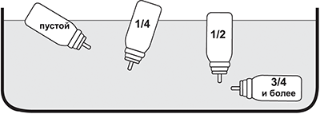

|
 |
| БЕРОТЕК® Н (BEROTEC® N) fenoterol аэрозоль д/ингаляций дозир. | ||||||
|
Клинико-фармакологическая группа: Бронхолитический препарат - бета2-адреномиметик Номер и дата регистрации: ЛП-№(000610)-(РГ-RU) от 03.03.22 Код ATX: R03AC04 |
Владелец регистрационного удостоверения: зарегистрировано Представительство: | |||||
Форма выпуска, состав и упаковка Аэрозоль для ингаляций дозированный в виде прозрачной, бесцветной или светло-желтого, или светло-коричневатого цвета жидкости, свободной от суспендированных частиц.
Вспомогательные вещества: лимонная кислота безводная - 0.001 мг, вода очищенная - 1.04 мг, этанол абсолютный - 15.597 мг, тетрафторэтан (HFA 134a, пропеллент) - 35.252 мг. 10 мл (200 доз) - баллончик аэрозольный металлический с клапаном дозирующего действия и мундштуком (1) - пачки картонные. | ||||||
Описание препарата основано на официально утвержденной инструкции по применению и утверждено компанией-производителем для издания 2018 г. | ||||||
Фармакологическое действие |
Фармакокинетика |
Показания |
Режим дозирования |
Побочное действие |
Противопоказания |
Беременность и лактация |
Особые указания |
Передозировка |
Лекарственное взаимодействие |
Условия хранения и сроки годности |
Условия реализации
Фармакологическое действие
Бронхолитический препарат, селективный бета2-адреномиметик. Беротек® Н является эффективным бронхолитическим препаратом для предупреждения и купирования приступов бронхоспазма при бронхиальной астме и других состояниях, сопровождающихся обратимой обструкцией дыхательных путей, таких как хронический обструктивный бронхит (с наличием или без эмфиземы легких). Фенотерол является селективным стимулятором β2-адренорецепторов в терапевтическом диапазоне доз. Стимуляция β1-адренорецепторов происходит при применении препарата в более высоких дозах. Связывание с β2-адренорецепторами активирует аденилатциклазу через стимуляторный Gs-белок с последующим увеличением образования циклического аденозинмонофосфата (цАМФ), который активирует протеинкиназу А. Протеинкиназа А лишает миозин способности соединяться с актином, что вызывает расслабление гладкой мускулатуры. Фенотерол расслабляет гладкую мускулатуру бронхов и сосудов и защищает от бронхоконстрикторных стимулов, таких как гистамин, метахолин, холодный воздух и аллергены (ранний ответ). Кроме того, фенотерол тормозит высвобождение из тучных клеток бронхоконстрикторных и провоспалительных медиаторов. Усиление мукоцилиарного клиренса продемонстрировано после применения фенотерола (в дозе 600 мкг). За счет стимулирующего влияния на β1-адренорецепторы, фенотерол может оказывать действие на миокард (особенно в дозах, превышающих терапевтические), вызывая учащение и усиление сердечных сокращений. Фенотерол быстро купирует бронхоспазм различного генеза. Бронходилатация развивается в течение нескольких минут после ингаляции и продолжается 3-5 ч. Также фенотерол защищает от бронхоконстрикции, которая возникает под воздействием различных стимулов, таких как физическая нагрузка, холодный воздух и аллергены (ранний ответ). Фармакокинетика
Всасывание В зависимости от техники ингаляции и используемой ингаляционной системы около 10-30% фенотерола гидробромида достигает нижних дыхательных путей. Остальная часть оседает в верхних дыхательных путях и во рту, а затем проглатывается. Абсолютная биодоступность фенотерола после ингаляции дозированного аэрозоля Беротек® Н составляет 18.7%. Абсорбция фенотерола из легких двухфазная: 30% дозы абсорбируется быстро (T1/2 11 мин), а 70% - медленно (T1/2 120 мин). Cmax в плазме после ингаляции 200 мкг фенотерола составляет 66.9 пг/мл (время достижения Cmax в плазме 15 мин). После перорального введения абсорбируется приблизительно 60% дозы фенотерола гидробромида. Абсорбировавшееся количество подвергается экстенсивной первой фазе метаболизма в печени, в итоге биодоступность при пероральном применении составляет приблизительно 1.5%, и ее вклад в концентрацию фенотерола в плазме после ингаляции является небольшим. Распределение Связывание с белками плазмы - от 40 до 55%. Распределение фенотерола в плазме после в/в введения адекватно описывается 3-компонентной фармакокинетической моделью (T1/2α составляет 0.42 мин, T1/2α - 14.3 и T1/2γ - 3.2 ч). Vd фенотерола при Css после в/в введения составляет 1.9-2.7 л/кг. Фенотерола гидробромид в неизмененном виде может проникать через плацентарный барьер. Фенотерол может выделяться с грудным молоком. Метаболизм Фенотерол подвергается интенсивному метаболизму в печени путем конъюгации до глюкуронидов и сульфатов. Проглоченная часть фенотерола метаболизируется преимущественно путем сульфатирования. Эта метаболическая инактивация исходного вещества начинается уже в стенке кишечника. Выведение Фенотерол выводится почками и с желчью в виде неактивных сульфатных конъюгатов. Биотрансформации, включая выделение с желчью, подвергается основная часть дозы (приблизительно 85%). Выведение фенотерола с мочой (0.27 л/мин) соответствует приблизительно 15% среднего общего клиренса системно доступной дозы. Объем почечного клиренса свидетельствует о тубулярной секреции фенотерола дополнительно к гломерулярной фильтрации. После ингаляции в неизмененном виде 2% дозы выводится через почки в течение 24 ч. Показания
Режим дозирования
Взрослые и дети старше 6 лет Приступы бронхиальной астмы и другие состояния, сопровождающиеся обратимой обструкцией дыхательных путей В большинстве случаев для купирования бронхоспазма достаточно 1 ингаляционной дозы. Если в течение 5 мин облегчения дыхания не наступило, можно повторить ингаляцию. Если эффект отсутствует после 2 ингаляционных доз, и требуются дополнительные ингаляции, следует без промедления обратиться к врачу. Максимальная допустимая доза - 8 ингаляционных доз/сут. Профилактика приступов бронхиальной астмы вследствие физического напряжения 1-2 ингаляционные дозы до физической нагрузки, до 8 ингаляционных доз/сут. У детей в возрасте от 6 до 12 лет Беротек® Н следует применять только после консультации с врачом и под наблюдением взрослых. Дети в возрасте от 4 до 6 лет Приступы бронхиальной астмы и другие состояния, сопровождающиеся обратимой обструкцией дыхательных путей Для купирования бронхоспазма достаточно 1 ингаляционной дозы. Если эффект отсутствует, следует без промедления обратиться за медицинской помощью. Профилактика приступов бронхиальной астмы вследствие физического напряжения 1 ингаляционная доза до физической нагрузки, до 4 ингаляционных доз/сут. У детей в возрасте от 4 до 6 лет Беротек® Н следует применять только после консультации с врачом и под наблюдением взрослых. Правила использования препарата Для достижения максимального эффекта необходимо правильно использовать дозированный аэрозоль. Чтобы подготовить новый ингалятор к использованию, следует снять защитный колпачок, повернуть ингалятор дном вверх и сделать два впрыска в воздух (дважды нажать на дно баллончика). Каждый раз при использовании дозированного аэрозоля необходимо соблюдать следующие правила. 1. Снять защитный колпачок. 2. Сделать полный выдох. 3. Удерживая баллончик, плотно обхватить губами мундштук. При этом дно ингалятора обращено вверх. 4. Производя максимально глубокий вдох, одновременно сильно нажать на дно баллончика, чтобы высвободить ингаляционную дозу. На несколько секунд задержать дыхание, затем вынуть мундштук изо рта и медленно выдохнуть. Если потребуется повторная ингаляция, повторить те же действия (пункты 2-4). 5. Надеть защитный колпачок. 6. Если ингалятор не использовался более 3 дней, перед применением следует однократно нажать на дно баллончика. Т.к. баллон не прозрачен, нельзя определить визуально, пустой ли он. Баллон рассчитан на 200 ингаляций. После использования этого количества доз в нем может оставаться небольшое количество раствора. Тем не менее, следует заменить ингалятор, т.к. иначе можно не получить необходимую терапевтическую дозу. Количество препарата, оставшегося в баллоне, можно проверить следующим образом: снять защитный колпачок, погрузить баллон в емкость, наполненную водой. Содержимое баллона можно определить в зависимости от его положения в воде (рис. 1).  Рис. 1 Ингалятор следует очищать не менее 1 раза в неделю. Важно содержать мундштук ингалятора чистым, чтобы лекарство не накопилось и не блокировало распыление. Для очистки сначала следует снять колпачок и вынуть баллончик из ингалятора. Промыть корпус ингалятора теплой водой для удаления накопившегося лекарства или видимых загрязнений. После очистки следует встряхнуть ингалятор и дать ему высохнуть на воздухе без использования нагревающих устройств. Когда мундштук высохнет, возвратить на место баллончик и защитный колпачок. Пластиковый мундштук для рта разработан специально для дозированного аэрозоля Беротек® Н и служит для точного дозирования препарата. Мундштук не должен быть использован с другими дозированными аэрозолями. Нельзя также использовать дозированный аэрозоль Беротек® Н с другими адаптерами, кроме мундштука, поставляемого вместе с препаратом. Содержимое баллона находится под давлением. Баллон нельзя вскрывать и подвергать нагреванию выше 50°С. Побочное действие
Как и все другие виды ингаляционного лечения, Беротек® Н может вызывать симптомы местного раздражающего действия. Определение категорий частоты побочных реакций, которые могут возникать во время лечения: очень часто (≥1/10), часто (от ≥1/100 до <1/10), нечасто (от ≥1/1000 до <1/100), редко (от ≥1/10 000 до <1/1000), очень редко (<1/10 000); частота неизвестна (частота не может быть оценена на основании имеющихся данных). Со стороны иммунной системы: частота неизвестна - гиперчувствительность, крапивница. Со стороны обмена веществ: нечасто - гипокалиемия, включая тяжелую гипокалиемию. Со стороны психики и нервной системы: часто - тремор; нечасто - возбуждение; частота неизвестна - нервозность, головная боль, головокружение. Со стороны сердечно-сосудистой системы: нечасто - аритмия; частота неизвестна - ишемия миокарда, тахикардия, ощущение сердцебиения, повышение систолического АД, снижение диастолического АД. Со стороны дыхательной системы: часто - кашель; нечасто - парадоксальный бронхоспазм; частота неизвестна - раздражение гортани и глотки. Со стороны пищеварительной системы: нечасто - тошнота, рвота. Со стороны кожи и подкожных тканей: нечасто - зуд; частота неизвестна - гипергидроз, кожные реакции, в т.ч. сыпь. Со стороны костно-мышечной системы: частота неизвестна - спазм мышц, миалгия, мышечная слабость. Противопоказания
С осторожностью только после тщательной оценки соотношения пользы и риска лечения следует применять Беротек® Н, особенно в максимальных рекомендованных дозах при следующих заболеваниях и состояниях: гипертиреоз, гипокалиемия, недостаточно контролируемый сахарный диабет, недавно перенесенный инфаркт миокарда (в течение последних 3 месяцев), тяжелые органические заболевания сердца и сосудов, такие как хроническая сердечная недостаточность, ИБС, заболевания коронарных артерий, пороки сердца (в т.ч. аортальный стеноз), выраженные поражения церебральных и периферических артерий, феохромоцитома. Т.к. информация о применении препарата у детей в возрасте до 6 лет ограничена, лечение проводят с осторожностью, только под наблюдением врача. Применение при беременности и кормлении грудью
Результаты доклинических исследований в сочетании с имеющимся опытом клинического применения препарата не выявили никакого отрицательного влияния препарата на течение беременности. Тем не менее, при беременности (особенно в I триместре) препарат следует назначать с осторожностью и только в тех случаях, когда ожидаемая польза для матери превышает возможный риск для плода. Следует учитывать возможность ингибирующего эффекта фенотерола на сократительную активность матки. Доклинические исследования показали, что фенотерол выделяется с грудным молоком. Безопасность применения препарата в период лактации не изучена. В период лактации применение препарата возможно в том случае, если потенциальная польза для матери превышает возможный риск для грудного ребенка. Клинические данные о воздействии фенотерола на фертильность отсутствуют. Доклинические исследования фенотерола не показали неблагоприятного воздействия на фертильность. Особые указания
Парадоксальный бронхоспазм Как и другие ингаляционные препараты, Беротек® Н может вызвать парадоксальный бронхоспазм, который может угрожать жизни. При возникновении парадоксального бронхоспазма препарат следует немедленно отменить и заменить альтернативной терапией. Эффекты со стороны сердечно-сосудистой системы Эффекты со стороны сердечно-сосудистой системы могут наблюдаться при применении симпатомиметических препаратов, включая препарат Беротек® Н. Имеются данные пострегистрационных исследований и публикации в литературе о редких случаях развития ишемии миокарда, ассоциированной с применением бета-агонистов. Пациенты с фоновым тяжелым заболеванием сердца (например, ИБС, аритмия или тяжелая сердечная недостаточность), получающие препарат Беротек® Н, должны быть предупреждены о необходимости обратиться за медицинской помощью при возникновении болей в груди или ухудшения течения заболевания сердца. Следует уделить внимание оценке таких симптомов, как одышка и боль в груди, поскольку они могут носить как респираторный, так и кардиальный характер. Гипокалиемия Потенциально серьезная гипокалиемия может развиться вследствие терапии бета2-агонистами. Рекомендуется соблюдать особую осторожность при тяжелой бронхиальной астме, поскольку гипокалиемия может потенцироваться сопутствующей терапией производными ксантина, ГКС и диуретиками. Кроме того, гипоксия может усилить влияние гипокалиемии на сердечный ритм. Гипокалиемия может привести к повышенной предрасположенности к аритмиям у пациентов, получающих дигоксин. В таких ситуациях рекомендуется контролировать уровень калия в сыворотке. Острая прогрессирующая одышка Пациентам следует рекомендовать немедленно обратиться к врачу в случае острой, быстро усиливающейся одышки. Регулярное применение Купирование приступов бронхиальной астмы (симптоматическое лечение) предпочтительнее регулярного применения препарата. Больных необходимо обследовать для выявления необходимости в назначении или усилении противовоспалительного лечения (например, ингаляционными ГКС) с целью контроля воспаления дыхательных путей и предупреждения отсроченного повреждения легких. В случае усиления бронхиальной обструкции неприемлемо и может быть рискованным увеличение кратности приема агонистов β2-адренорецепторов, в т.ч. препарата Беротек® Н, в дозах, превышающих рекомендуемые и на протяжении длительного времени. Регулярное применение агонистов β2-адренорецепторов, в т.ч. препарата Беротек® Н, для контроля симптомов бронхиальной обструкции может свидетельствовать об ухудшении контроля заболевания. В такой ситуации следует пересмотреть план лечения и, особенно, адекватность противовоспалительной терапии, чтобы предотвратить потенциально опасное для жизни ухудшение контроля заболевания. Совместное использование с симпатомиметическими и антихолинергическими бронходилататорами Другие симпатомиметические бронходилататоры следует применять совместно с препаратом Беротек® Н только под наблюдением врача. Антихолинергические бронходилататоры можно ингалировать одновременно с препаратом Беротек® Н. Влияние на результаты лабораторных исследований Применение препарата Беротек® Н может приводить к положительным результатам тестов на наличие фенотерола в исследованиях на злоупотребление препаратами по немедицинским показаниям, например, в связи с усилением физических возможностей у спортсменов (допинг). Следует учитывать, что препарат содержит небольшое количество этанола (15.597 мг в одной дозе). Влияние на способность к управлению транспортными средствами и механизмами Исследования по изучению влияния препарата на способность управлять транспортными средствами и механизмами не проводились. Однако в ходе проведенных клинических исследований наблюдались такие симптомы, как головокружение. Поэтому рекомендуется соблюдать осторожность во время управления транспортными средствами и использования механизмов. Передозировка
Симптомы: ожидаемые симптомы вызваны чрезмерной бета-адренергической стимуляцией, в т.ч. тахикардия, сердцебиение, тремор, снижение или повышение АД, увеличение пульсового давления, стенокардия, аритмии, гиперемия лица. Метаболический ацидоз и гипокалиемия также наблюдались при применении фенотерола в дозах, превышающих рекомендованные дозы для утвержденных показаний. Лечение: отмена терапии препаратом Беротек® Н. Мониторинг кислотно-щелочного баланса и баланса электролитов. Назначение седативных препаратов, в тяжелых случаях проводят интенсивную симптоматическую терапию. В качестве специфических антидотов рекомендуется назначение бета-адреноблокаторов (предпочтительно селективные бета1-адреноблокаторы). При этом необходимо учитывать возможность усиления бронхиальной обструкции и осторожно подбирать дозу этих препаратов у пациентов с бронхиальной астмой. Лекарственное взаимодействие
При одновременном применении бета-адреномиметиков, антихолинергических средств, производных ксантина (например, теофиллина), кромоглициевой кислоты, ГКС, диуретиков возможно усиление действия и побочных эффектов фенотерола. Гипокалиемия, вызванная агонистами β2-адренорецепторов может быть усилена сопутствующей терапией производными ксантина, кортикостероидами и диуретиками. Это особенно следует принимать во внимание у пациентов с тяжелой обструкцией дыхательных путей. Возможно значительное ослабление бронхолитического действия фенотерола при одновременном применении бета-адреноблокаторов. Следует с осторожностью назначать Беротек® Н пациентам, получающим ингибиторы МАО и трициклические антидепрессанты, т.к. эти препараты способны усиливать действие агонистов β-адренорецепторов. Средства для ингаляционного наркоза (галотан, трихлорэтилен, энфлуран) повышают вероятность воздействия агонистов β-адренорецепторов (в т.ч. фенотерола) на сердечно-сосудистую систему. |
||||||
Вернуться наверх |
||||||
Copyright © Справочник Видаль «Лекарственные препараты в России», Москва, Россия